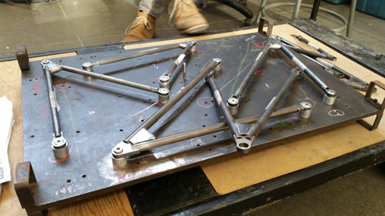
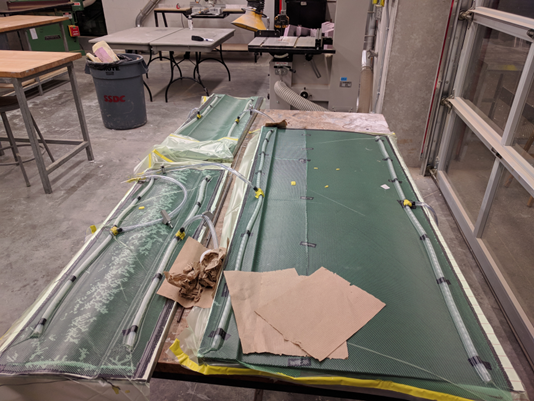
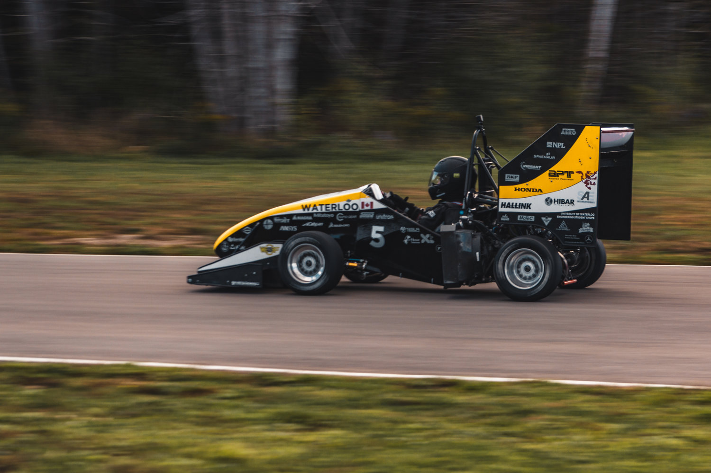
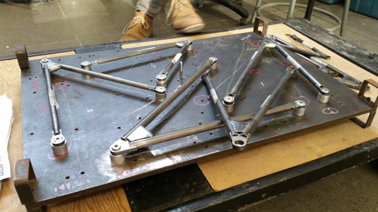
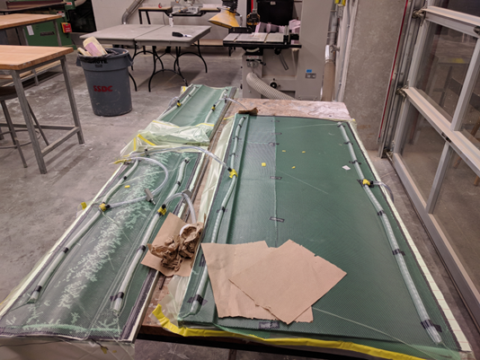
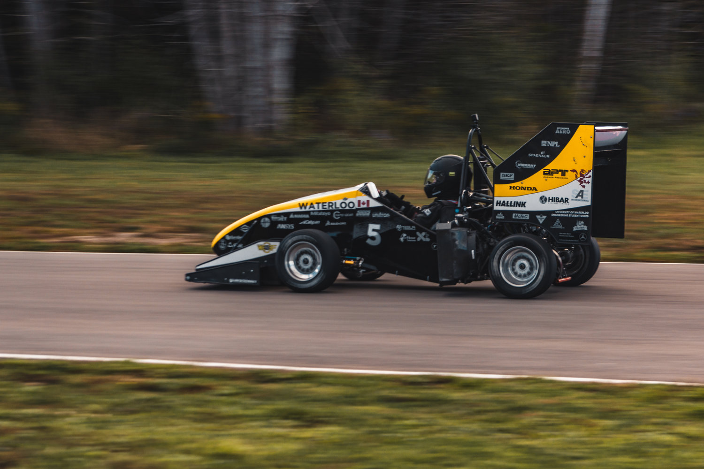

Hello! I am a recent graduate from the University of Toronto with a Masters of Applied Science in Mechanical Engineering.
I did my research with the PCIGITI Lab at SickKids Hospital where I worked on
the design, fabrication and controls of minimally invasive surgical robots for operating inside the uterus.
Contacts:
I also like to take photos for fun!


 




